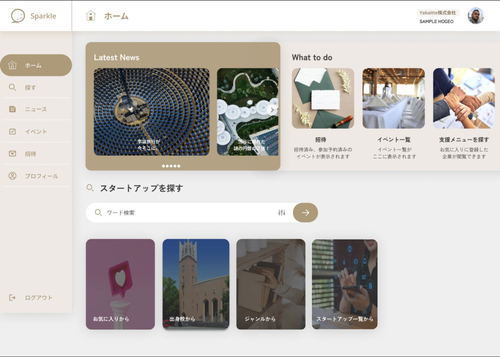
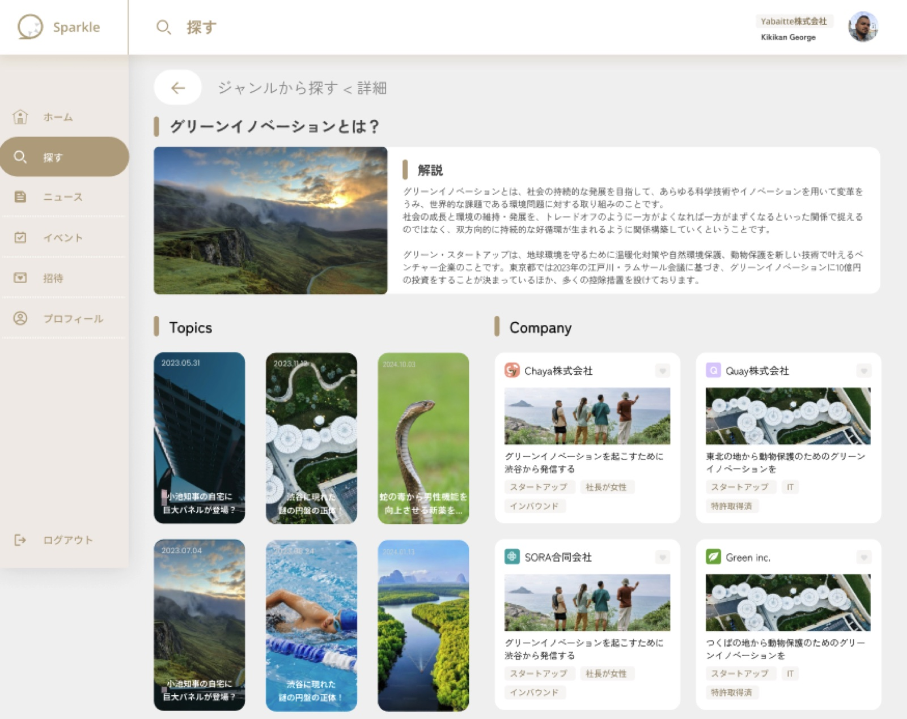

作品一覧へ戻る
Spurcle（企業検索・イベント参加プラットフォーム）
スタートアップ・地域企業・地域支援者・運営の 4 種類のユーザーが、企業・ニュース・イベント情報を閲覧・検索・応募できる Web プラットフォーム。設計からインフラまで横断して担当。


概要
スタートアップ・地域企業・地域支援者・運営の 4 種類のユーザーが、企業・ニュース・イベント情報を閲覧・検索・応募できる Web プラットフォーム。 Next.js フロントエンド、Laravel API、MicroCMS（ヘッドレス CMS）、AWS Cognito 認証を組み合わせた構成を、設計からインフラまで横断して担当しました。
技術的課題
- AWS Cognito のメール OTP 認証と、RDS 上のユーザーデータ・Cookie ベースのトークン更新を組み合わせた認証フローの設計
- MicroCMS の動的フィルタ（ジャンル・タグ・従業員数など）と、ロール別閲覧制御の両立
- ヘッドレス CMS のコンテンツと DB 上のいいね・応募状態を API レスポンスで統合する処理
主な担当
- Next.js 14（App Router）による企業検索・ニュース・イベント・プロフィール・管理画面の実装と、middleware による未認証リダイレクト制御
- Laravel 11 による REST API 設計と、MicroCMS SDK を用いた複合フィルタ検索の実装
- Cognito によるサインアップ・メール OTP 認証・トークンリフレッシュの集約設計と、Cognito↔DB 同期用 Artisan コマンドの実装
- 4 ロールに応じた閲覧可能コンテンツの制御と、いいね・応募のソフトデリート管理
- GitHub Actions によるステージング自動・本番手動のデプロイ体制（CI/CD）の構築
成果
- 非エンジニアによるコンテンツ運用を可能にし、本番環境として安定稼働中
- SE 1 名で設計〜実装〜インフラまでを一貫して完遂